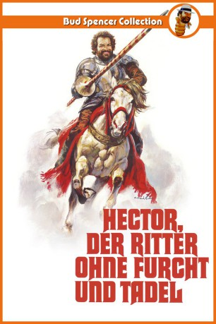
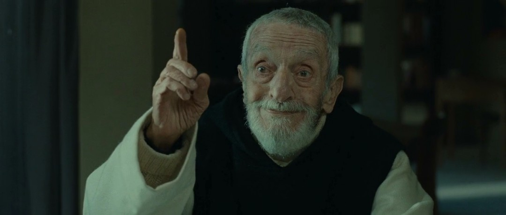
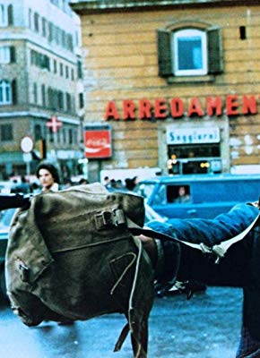

#4388 Hector, Ritter ohne Furcht und Tadel
Alternativ: Hector, der Ritter ohne Furcht und Tadel (Englischer Titel)
 
 IMDB-Wertung: 6.3 / 10
IMDB-Wertung: 6.3 / 10  Metascore: 0
Metascore: 0 
Auf italienischem Boden tobt der spanisch-französische Krieg. Als fünf Italiener, unter ihnen auch Hector Fieramosca von französischen Soldaten schlecht behandelt werden, schließen sie sich kurzerhand den Spaniern an. Von nun an haben die französischen Besatzer nichts mehr zu lachen.
Jahr: 1976
Dauer: 110 Minuten
FSK: 12
Land: Studio: TobisTonspuren:
Untertitel:
Auflösung: 1080p (1920x1024) Größe: 7065 MB
Genre: Action, Abenteuer, Komödie, Drama, Geschichte
Regisseur: Pasquale Festa Campanile
Drehbuch: Michael Konyves
Soundtrack:
Darsteller:
 Bud Spencer als Ettore Fieramosca
Bud Spencer als Ettore Fieramosca Andréa Ferréol als Leonora
Andréa Ferréol als Leonora Philippe Leroy als Charles La Motte
Philippe Leroy als Charles La Motte- Gino Pernice als Fanfulla da Lodi
 Pietro Torrisi als Soldato francese , uncredited
Pietro Torrisi als Soldato francese , uncredited- Franco Agostini als Romanello da Forlì
- Enzo Cannavale als Bracalone da Napoli
- Frédéric de Pasquale als
- Jacques Dufilho als Mariano Da Trani
-  Jacques Herlin als
- Angelo Infanti als Graziano d'Asti
- Oreste Lionello als Giovenale da Vetralla
- Antonio Orlando als
- Eros Pagni als Capoccio da Roma
- Renzo Palmer als Fra' Ludovico da Rieti
- Mario Pilar als Salomone da Cavorà
-  Marc Porel als Duke of Namur
- Mariano Rigillo als Albimonte da Peretola
- Mario Scaccia als Don Pedro Gonzalo de Guadarrama
- Roberto Antonelli als
- Roy Bosier als
- Nicolas Barthe als
- Ana Ria de Simone als
- Loretta Persichetti als
- Guglielmo Spoletini als
- Monica Strebel als
- Artemio Antonini als Soldato francese , uncredited
 Luis Barboo als (uncredited
Luis Barboo als (uncredited Salvatore Basile als Popolano nella bisca , uncredited
Salvatore Basile als Popolano nella bisca , uncredited- Giancarlo Bastianoni als Soldato francese / Popolano nella bisca , uncredited
- José Bastida als (uncredited
- Pablo Blanco als (uncredited
 Omero Capanna als Soldato francese / Popolano nella bisca , uncredited
Omero Capanna als Soldato francese / Popolano nella bisca , uncredited- Giovanni Cianfriglia als D'Anjou , uncredited
- Roberto Dell'Acqua als Soldato francese , uncredited
- Ricardo Díaz als (uncredited
- Verónica Luján als (uncredited
- Vincenzo Maggio als Soldato francese / Popolano nella bisca , uncredited
- Rafael Morales als (uncredited
- Guillermo Méndez als (uncredited
- Francisco Nieto als (uncredited
 Ricardo Palacios als (uncredited
Ricardo Palacios als (uncredited- Osiride Pevarello als Soldato francese , uncredited
- Riccardo Pizzuti als Villeforte , uncredited
- Ricardo Rubinstein als (uncredited
- Claudio Ruffini als Popolano nella bisca , uncredited
- Manuel Ruiz als (uncredited
- Joaquín Solís als (uncredited
- Ada Tauler als (uncredited
- Franco Ukmar als Soldato francese / Ufficiale francese , uncredited
Datei: X:\Person\Bud Spencer + Terence Hill\Hector, Ritter ohne Furcht und Tadel (1976, FSK12, 1920x1024).mkv seit 13.09.2016
Festplatte: HD Collection-7+mehr(A-Z)+Person
 Es gibt insgesamt 43 Filme in der Gruppe 'Person\Bud Spencer + Terence Hill'
Es gibt insgesamt 43 Filme in der Gruppe 'Person\Bud Spencer + Terence Hill'